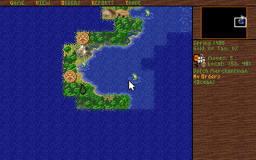

CHAPTER 4 · WORLD STATE
A HEMISPHERE IN 24K
Strip away the paged code of Chapter 1 and the streamed art of Chapter 3, and what remains is the thing the machine was actually for. In Colonization, the entire New World — every unit, colony, tribe, market price and tile — is a 25,311-byte file. Call it 24K. The simulation itself never needed more than 4% of the machine; the other 96% was spent making it visible.
A save that adds up — to the byte
Modern save files are serialised object graphs: tags, lengths, versions, slack.
Colonization's save is none of those things. It is a memory image of fixed-size records,
laid end to end, in a fixed order. colony09.sav — a save written by the game
running under mddosem, year 1495, no colonies founded yet — is
25,311 bytes long, and every one of them is accounted for:
390 (header) + 0×202 (colonies) + 95×28 (units) + 4×316 (powers)
+ 80×18 (villages) + 8×78 (tribes) + 727 (reports) + 4×4,176 (map planes)
+ 270 (sea routes) + 270 (land routes) + 74 (unknown) + 888 (trade routes)
= 25,311 = EOF — zero bytes unaccountedThe header is the schema's own witness. It opens with the magic COLONIZE;
the map dimensions 58×72 sit at 0x0C/0x0E;
the year 1495 at 0x1A; and the record counts at
0x2A–0x2E read 80, 95, 0 — precisely
the multipliers (80 villages, 95 units, 0 colonies) that make the arithmetic above close.
There is no compression and no framing: the offsets are the format.
The header also carries the whole transatlantic economy: a sixteen-good market price table at 0x7A (values 611–937 in this save), followed by four 52-byte player blocks — 24 bytes of leader, 24 of country, 4 unidentified: “Walter Raleigh / New England”, “Jacques Cartier / New France”, “Christopher Columbus / New Spain”, and a renamed “Jah / New Netherlands”. Deeper in, each European power's 316-byte record keeps its gold in a single word at record offset +0x2A — still zero for all four in 1495.
| Section | Offset | Arithmetic | Bytes | Observed in this save |
|---|---|---|---|---|
| Header | 0x0000 | 390 | 390 | magic COLONIZE, 58×72, year 1495, market table, 4 player blocks |
| Colonies | 0x0186 | 0 × 202 | 0 | none founded yet |
| Units | 0x0186 | 95 × 28 | 2,660 | 90/95 records with plausible x<58, y<72; one dead slot marked x=0xF0 |
| Powers | 0x0BEA | 4 × 316 | 1,264 | gold word at +0x2A = 0 for all four |
| Indian villages | 0x10DA | 80 × 18 | 1,440 | 80/80 plausible coordinates; tribe byte at +2 spans 8 values |
| Tribes | 0x167A | 8 × 78 | 624 | one 78-byte record per nation |
| Reports | 0x18EA | 727 | 727 | precomputed report data |
| Map planes | 0x1BC1 | 4 × 4,176 | 16,704 | terrain plane dominant byte 0x19 — ocean, 2,329 of 4,176 tiles |
| Sea routes | 0x5D01 | 270 | 270 | 4×4-chunked routing plane (15×18 chunks) |
| Land routes | 0x5E0F | 270 | 270 | ditto |
| Unknown | 0x5F1D | 74 | 74 | unidentified |
| Trade routes | 0x5F67 | 12 × 74 | 888 | |
| Total | = EOF | 25,311 | zero bytes unaccounted |
Sum the mutable world itself — header, colonies, units, powers, villages, tribes and the four map planes — and you get 23,082 bytes. Add the precomputed report and route caches and the whole file is still 25,311 bytes: 3.9% of the 640 KB arena. The RAM problem this site keeps describing was never the simulation. It was presentation.
Twenty-eight bytes of conquistador
A Colonization unit — a galleon, a wagon train, a dragoon — is a 28-byte record. Our byte-level pass verified the first two fields directly: 90 of the 95 records in this save carry a plausible x < 58 at offset +0 and y < 72 at +1, and one dead slot is flagged in place by the sentinel x = 0xF0 — suggesting records are retired by marker, not by shuffling the array. An Indian village is 18 bytes, with its tribe in a single byte at +2; an entire tribal nation is one 78-byte record. Civilization is leaner still: its unit record is 12 bytes.
The terrain under those units is stored the same way: as four parallel byte planes of
58×72 = 4,176 bytes each. Every tile of the hemisphere owns exactly four bytes — one per
plane. In this save the terrain plane's dominant byte is 0x19, ocean, filling 2,329 of its
4,176 tiles. The fixed America map ships in the same shape: amer2.mp is
12,534 bytes — a 6-byte header reading 58, 72, 4, then three uncompressed 4,176-byte
planes. Our save's terrain agrees with amer2.mp's first plane in only 30.8% of bytes,
which is the arithmetic way of saying: this game was played on a generated random
New World, not the canned America.
A planet in 37,856 bytes
Civilization, three years earlier, made an even blunter choice: every save is exactly 37,856 bytes. All ten saves in our install match to the byte — a fixed-layout memory dump with no compression at all. (The one known variant is the French 474.05 release at 37,912 bytes: unit-type names grow from 12 to 14 characters, and 28 types × 2 characters is exactly the 56-byte delta.) The size is constant because the world's limits are compiled in: 128 cities world-total, 8 civilisations × 128 units, 28 unit types, 20 workable squares per city. Nothing grows; everything is an array.
| Offset | Block | Arithmetic | Bytes |
|---|---|---|---|
| 0x0000 | header — turn, human civ, map seed at 0x6, year, difficulty | 16 | 16 |
| 0x0010 | leader names | 8 × 14 | 112 |
| 0x0138 | treasury per civ | — | 32 |
| 0x1508 | cities | 128 × 28 | 3,584 |
| 0x2308 | unit-type table — the rules, inside the save | 28 × 34 | 952 |
| 0x26C0 | units | 8 × 128 × 12 | 12,288 |
| 0x56C0 | visibility mask — bit per civ, byte per tile | 80 × 50 | 4,000 |
| 0x76F0± | end-of-game replay log | variable records | ~4,100 |
| 0x8AA0 | land-pathfinding helper data | — | 260 |
| whole file, every English 475.01 save | 37,856 |
Offsets and block sizes per darkpanda's SVE thread; the turn counter at 0x0000, the leader names at 0x0010 and the unit-type table at 0x2308 were byte-verified in our install — the remaining offsets are not independently re-verified.
Two details deserve a pause. First, the 28-entry unit-type table — Settlers,
Militia, Phalanx … Nuclear, Diplomat,
Caravan, 34 bytes each — lives inside the save. Unit definitions are
savegame state, which is precisely what made the community's later “hack the save” editors
possible. Second, the 28-byte city record packs a city's whole existence — four bytes of
building bit-flags, coordinates, status bits, production, food and shields stored, six bytes
of worked-square and specialist bitfields — with population as a single byte: the community's
field map reads 0x01 as 10,000 people and 0x7F as 81,280,000.
And the terrain? It is not in the .SVE at all. Each save carries a companion
CIVIL#.MAP whose payload is a single X0 image block in the game's own
picture codec (Chapter 3): a “320×200” 8-bit image, LZW+RLE compressed, which
decodes to 64,000 bytes = 16 stacked 80×50 byte planes. That 16-plane
structure is the binary fact; the community's format work describes about ten of the planes
as semantically used — terrain, occupation, continent IDs, land value, visibility,
improvements. All ten .MAP files in our install decode cleanly with the from-scratch decoder
we wrote for the art. The map is stored, quite literally, as a screenshot of itself —
MicroProse reused its image compressor as a general-purpose map compressor.
The world that was never stored
Here is the chapter's best trick. Civilization's special resources — the fish, oases, coal and gems that decide where cities thrive — and its tribal huts appear on every map, on every tile they should, game after game. None of them is stored anywhere. They are pure functions of the coordinates and one 16-bit word — the map seed the community calls the TerrainMasterWord, saved at offset 0x6 of the .SVE header (and sitting in memory at ds:6E00 while the game runs):
special(x,y) := y>1 && y<48
&& (x%4)*4 + (y%4) == ((x/4)*13 + (y/4)*11 + seed) % 16
hut(x,y) := y>1 && y<48 && no city here && not seen by barbarians
&& (x%4)*4 + (y%4) == ((x/4)*13 + (y/4)*11 + seed + 8) % 32
shielded grassland := (x+y) % 4 == 0 || (x+y) % 4 == 3 // no seed at allThe left-hand side indexes the sixteen cells of the 4×4 block a tile sits in; the
right-hand side hashes the block's coordinates (x/4, y/4 —
integer division) with the primes 13 and 11, plus the seed.
Exactly one cell per 4×4 block matches mod 16 — one special per block — while the hut
variant's mod 32 can only land in half the blocks. The primes stop the pattern visibly
repeating inside an 80×50 world. It is a procedural texture for game content: 4,000 tiles
of riches, at a storage cost of two bytes.
Intelligence in bytes
The same economy governs the AI. A Civilization leader's personality is three signed words, each restricted to −1, 0 or +1, at offsets +0x30, +0x32 and +0x34 of a 58-byte leader record: attitude (friendly…aggressive), expansion (perfectionist…expansionistic), style (militaristic…civilised). Two tables of seven records serve fourteen civilisations. Six bytes of soul.
Movement is a compass, not a planner. The community's disassembly found no
pathfinding at all: each turn, the AI scores a unit's eight neighbouring squares by
desirability — role, terrain, combat odds — and stores the chosen heading in a single byte
of the 12-byte unit record (the field the threads called “unknown9” for years). The routine
doing this scoring is the third-largest function in CIV.EXE. Its special cases are period
comedy: pillaging requires, verbatim,
if(UnitTypes[unit.typeID].totalMoves < 2) plus an enemy city within 4 squares,
a state of war and an improvement to destroy;
AI diplomats reaching one code path are simply disbanded — as the thread paraphrases,
“useless, just get rid of him already”.
Research strategy is a lookup: the 72-advance tech tree carries a parallel table of 72 × 2 bytes — a base priority and a modifier, the modifier added for civilised leaders and subtracted for militaristic ones. That personality-signed static table is the entire tech-choice AI.
Civilization's RNG is not bespoke: its constants — multiplier 0x343FD
(214,013), increment 0x269EC3 (2,531,011), state in two 16-bit words at
ds:5BDA/5BDC — are Microsoft C's stock
rand(). And the community found the leak: “when displaying a City View, the
random seed is re-initialized to the total sum of the city name's ASCII character codes” —
a determinism trick so every visit draws the same procedural street layout. Players learnt
to rename a city, open its view, and replay a now-fixed random sequence to force combat
results and hut outcomes. The street-art optimisation became a combat cheat.
The famous story — Gandhi's aggression of 1 underflowing an unsigned byte to 255 when India adopts Democracy — never happened. The aggression field has three values (−1/0/+1, above); roughly a third of leaders share Gandhi's lowest setting; government changes never modified it; and Sid Meier's 2020 memoir states the C variables were signed anyway. Brian Reynolds put it at “99.99% certain” apocryphal: a leader with aggression 255 “would act the same way as a leader with an aggression level of 3”. The tale traces to an unsourced 2012 TV Tropes edit, went viral through 2014, and was only run to ground in 2019–20. Firaxis then implemented it deliberately in Civ V and VI as an Easter egg — the joke became real after the fact. The fabricated byte-underflow has even been used to teach integer overflow at Harvard; the truth — six bytes of personality — is better engineering and a better story.
Twenty kilobytes of truth
Put the two answers side by side. Colonization: a 25,311-byte record file whose header counts prove its own decomposition. Civilization: a 37,856-byte fixed dump, a map stored as a screenshot of itself, and a resource economy conjured from sixteen bits. Every screen the player ever saw was a rendering of roughly twenty kilobytes of truth.


Sources for this chapter — byte-level: colony09.sav exact-fit decomposition, CIVILx.SVE / CIVILx.MAP walk and amer2.mp parse (2026 fresh analysis); community: darkpanda's SVE / MAP / RNG / pattern threads, Gowron & Dack's EXE tables, nawagers' Colonization SAV format, lateblt's city-record notes; myth-check: the Nuclear Gandhi record and Sid Meier's Memoir! (2020). Full credits in How We Know.